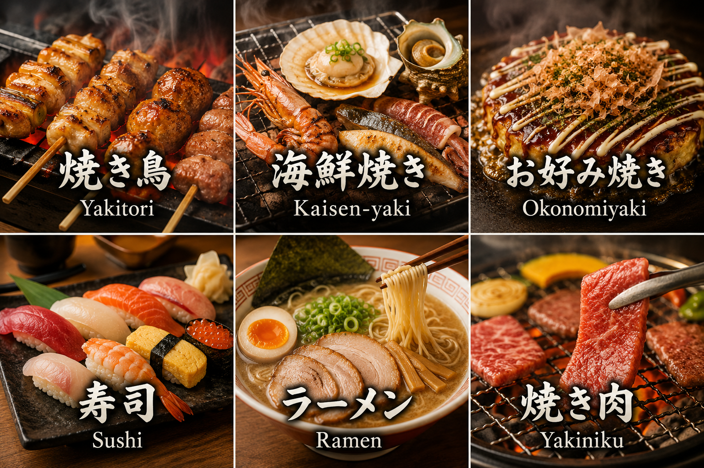

Unlock Japan’s Deepest
Izakaya Culture
with a Local Friend
No English menu? Confusing customs? No problem. A friendly local peer will guide you through the real, hidden back-alley bars that tourists never find.
Your Authentic Izakaya Journey
Experience how Izakaya Connect turns barriers into unforgettable, warm cultural connections in three simple steps.

“Cozy red lanterns call out, but Japanese-only signs make stepping in alone difficult.”
「魅力的な赤提灯に惹かれるものの、日本語だけの看板が一人で入るのをためらわせます。」
Experience Deep Food Genres
From crispy charcoal-grilled Yakitori to sizzling premium Yakiniku, Japanese Izakayas offer an endless variety of delicacies. Your guide will help you understand every bite and order exactly what matches your taste.

Why Izakaya Connect?
Skip tourist traps and dive straight into the local dining experience.
True Local Venues
Go exactly where local office workers unwind. Dine at small counters, stand-and-drink spots, and deep alleys untouched by travel guides.
No Misunderstandings
Your friendly peer guide smoothly explains traditional table charges ("Otoshi"), orders hidden specialties, and helps pay correctly.
Language-Loving Locals
Guides are friendly local peers who volunteer to practice their English and share their beloved neighborhood. Simply cover their dinner & drinks!
Transparent & Affordable Pricing
Simple service fee + actual food costs.
Platform Matching Fee
Paid securely in advance per session
On-site Food & Drinks
Pay directly to the Izakaya (covers both you and your guide)
Approx. ¥3,000 - ¥5,000
(~$20 - $32 USD) / person